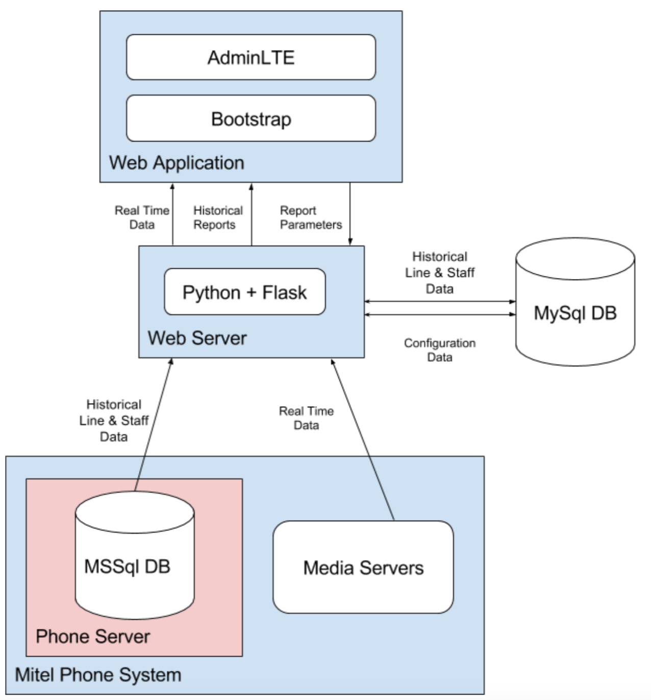

HandsOn Central Ohio is a dynamic social enterprise, serving as the region’s premier information, resource referral, and community insights organization. They are a non-profit organization that provides technologies and community data support that collectively impacts the Greater Columbus Area. Half a million people each year count on HandsOn to be their FirstLink, and guide along the smartest routes to opportunity.
I worked on a team of four to create a web app for HandsOn as part of my senior capstone project at Ohio State. The business objectives of the project were centered around to creating a dashboard for internal use that reflects HandsOn’s call center performance. The application is intended to be used by HandsOn managers to monitor active phone lines in real time and dynamically react to lines with a high volume of calls. The dashboard provides an overall view of all phone lines which can be viewed in more detail in their corresponding individual pages. The dashboard also provides access to archived data of the staff and call center performance. The objective for this functionality was to be able to generate reports to analyze historical staff performance and phone line performance. With this feature HandsOn may generate predictive results and invest in analytics in the future.
The backend of the application is written in Python using the Flask web framework. To provide real-time updates between the client and server, websockets are used through a library called SocketIO. The server opens connections to the Mitel Phone System to receive data in realtime. The server is also responsible for periodically pulling archived data from the phone system to store in a MySQL database hosted alongside the application server, which is then used to serve data for historical phone line and staff reports. Application-wide configuration values are also stored in this MySQL database.
The frontend of the application is written in HTML/CSS, and uses JavaScript to communicate with the server. The dashboard makes use of a framework called AdminLTE, which is built on Bootstrap, a commonly used CSS library. This framework provides a simple layout, as well as various widgets that can be configured to display useful and appealing information regarding the status of the phone lines. Websockets are also used via SocketIO in JavaScript to allow for real-time updates to webpages.
All of the data that is eventually shown in the dashboard comes straight from the Mitel Phone System. This is the system set in place that handles the transmission and storage of information when calls are placed, answered, abandoned, etc... Within this system is a Microsoft SQL database that archives call data for 1 year. The Mitel Phone System contains two media servers, which handle the incoming calls. Only one media server is used at a time, while the second sits as a backup. The web server connects to both of these media servers to receive real-time events as they are seen from the phone system.
A MySQL database is hosted on the same machine as the Flask web server. This database holds all of the application-wide configuration values such as service level values, manager and admin passwords, recovery emails, etc... This database is also the final point of storage for phone line data and staff member data that is used to generate historical reports. Data is pulled from the MSSql database housed within the Mitel Phone System and copied directly into the MySQL database with minimal modifications.
